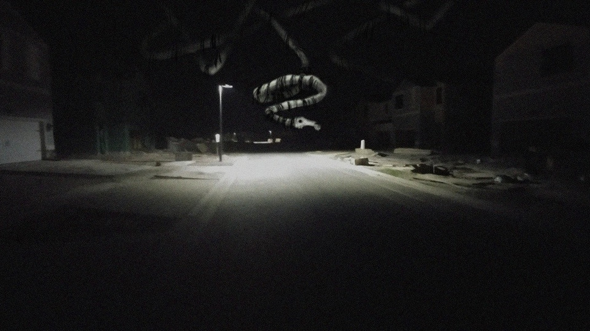
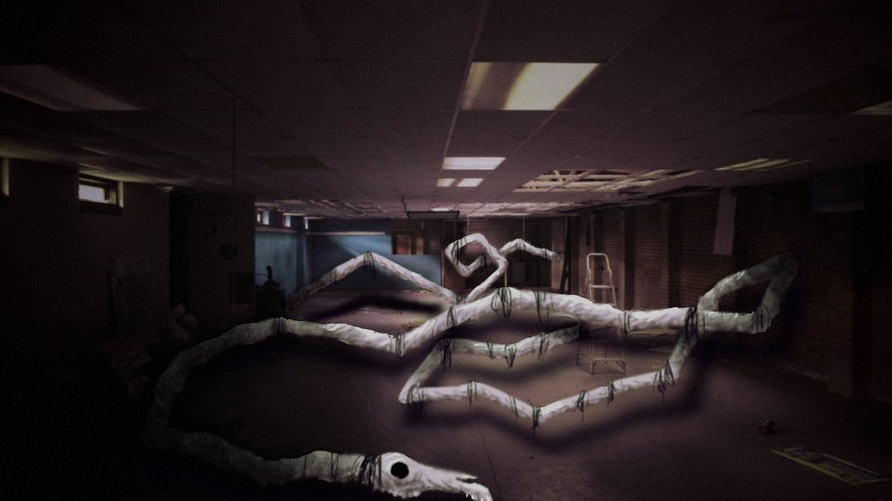
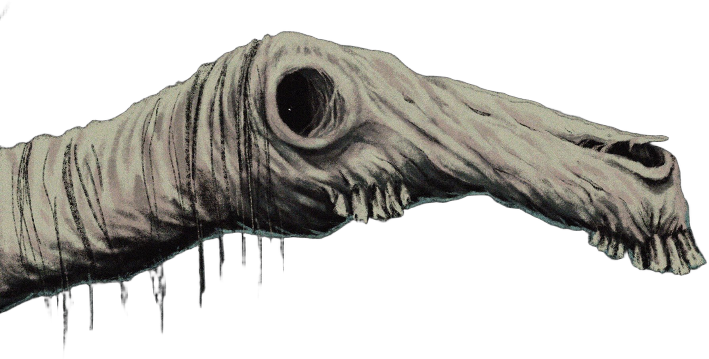
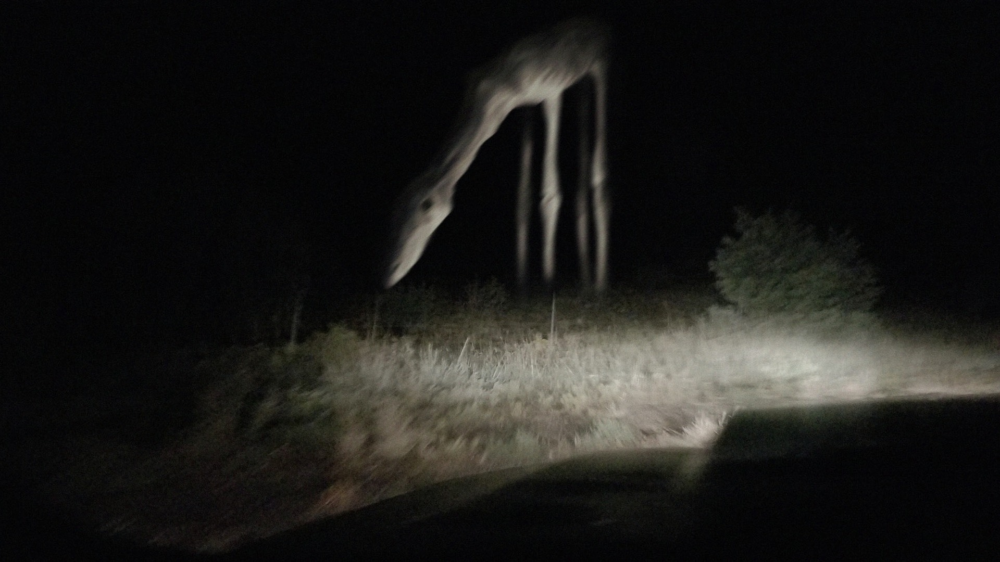

CANNOT HURT YOU
NOT GOOD NEWS
IN HER DREAMS


NO LOWER JAW
GIANT HUMAN FINGERS
FOREVER
100% FRIENDLY
INFINITE NECK
SMELLS OF CINNAMON
IT COMES TO WARN

YOU WILL SURVIVE
WHAT COMES AFTER
Long Horse
Long Horse
Long Horse